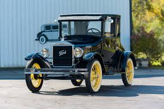
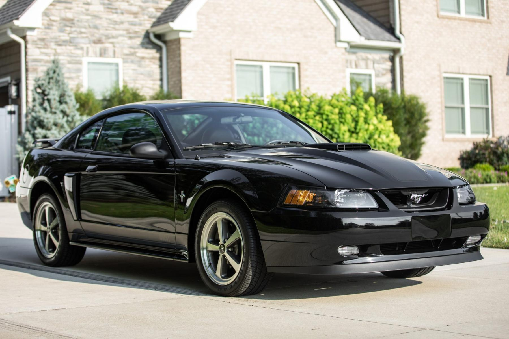
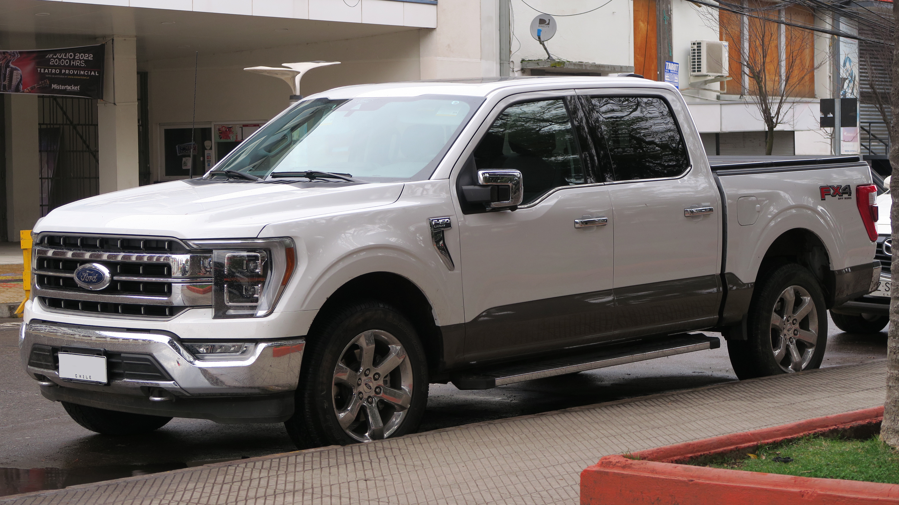
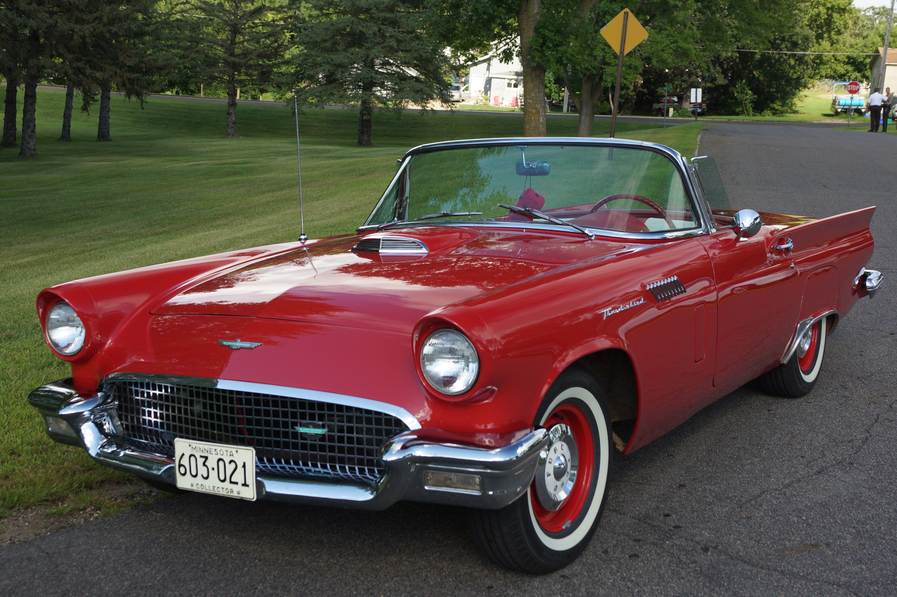
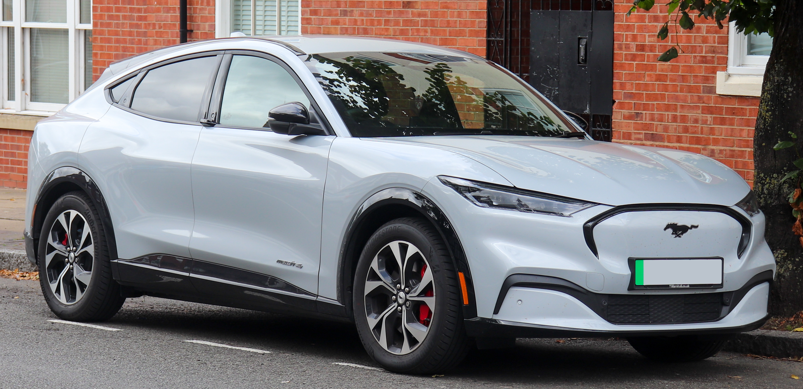
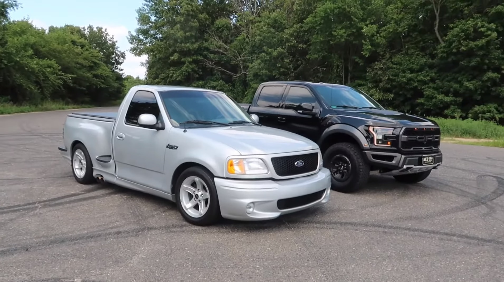
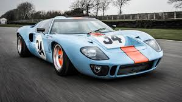

Ford
Built Ford Tough
Founded: 1903
Country: USA
Icon: Model T, Mustang
Assembly Line
Built Ford Tough
Henry Ford didn't invent the automobile, but he invented the system that made it accessible to everyone. His vision changed not just transportation, but manufacturing, labor, and American society itself.
After working at Edison Illuminating Company and building experimental vehicles, Ford founded the Ford Motor Company in 1903 with $28,000 capital. The first car was the Model A, followed by several models until the 1908 Model T.
The Model T was revolutionary – simple, rugged, and affordable. But the real innovation came in 1913 with the moving assembly line at Highland Park. This reduced chassis assembly time from 12 hours to 93 minutes, dramatically cutting costs. The price of a Model T dropped from $850 in 1908 to $300 by the 1920s.
Ford also shocked the world in 1914 by paying workers $5 per day – double the prevailing wage. This reduced turnover, increased productivity, and enabled workers to buy the cars they built. It was brilliant business and social progress.
The Model T dominated until 1927, when it was replaced by the Model A. Through the Depression and war, Ford survived and innovated. The 1948 F-Series pickup began a dynasty that continues today as America's best-selling vehicle.
The 1964 Mustang created the "pony car" segment and became a cultural phenomenon. The GT40's 1966 Le Mans victory fulfilled Henry Ford II's mission to beat Ferrari. The 1980s Taurus saved the company with its aerodynamic design.
Today, Ford is investing heavily in electrification with the Mustang Mach-E and F-150 Lightning, while maintaining its truck leadership. The company remains family-controlled and American-owned.
"Any customer can have a car painted any color that he wants so long as it is black."- Henry Ford (on Model T production efficiency)

1908-1927
The car that put America on wheels. The Model T was simple, durable, and affordable. With over 15 million sold, it was the first car for millions of families.

1964-present
The original pony car. The Mustang created a segment and became an American icon. Over 10 million sold.

1948-present
America's best-selling vehicle for over 40 years. The F-150 defines the pickup truck segment – tough, capable, and versatile.

1964-1969
The Ferrari killer. Built to beat Ferrari at Le Mans, the GT40 won four consecutive times (1966-1969), including the legendary 1-2-3 finish in 1966.

1955-2005
The personal luxury car icon. The T-Bird evolved from two-seat convertible to four-seat luxury coupe.
1985-2019
The aerodynamic sedan that saved Ford in the 1980s. America's best-selling car for much of the 1990s.
1990-present
The SUV that defined the 1990s boom. Family-friendly, capable, and enormously popular.

2020-present
Ford's electric future, wearing Mustang heritage. Controversial but successful – a true performance EV.
The Mustang wasn't just a car – it was a phenomenon. When it debuted at the 1964 New York World's Fair, it created a new category: the "pony car."
The Mustang has appeared in hundreds of films, most famously "Bullitt" (1968) with Steve McQueen's Highland Green GT390. It's been a cultural icon for 60 years.
The Ford F-Series has been America's best-selling vehicle for over 40 years and the best-selling truck for over 40 years. It's not just a vehicle – it's an American institution.
The F-150 Lightning (2022) is the electric version – 580 hp, 775 lb-ft, and a front trunk. It proves that even America's most traditional vehicle can go electric.

The Ford vs. Ferrari story is legendary. Henry Ford II tried to buy Ferrari in 1963; Enzo refused. Ford spent millions to build a car that would beat Ferrari at Le Mans. The GT40 did it in 1966, and Ford's victory was immortalized in the film "Ford v Ferrari" (2019).
